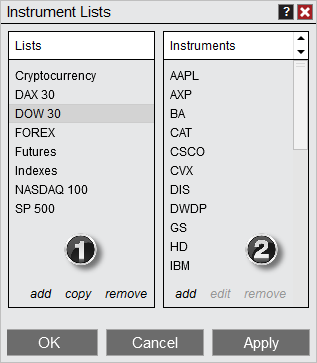
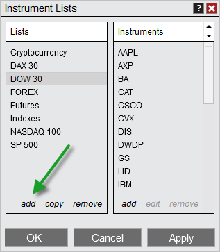
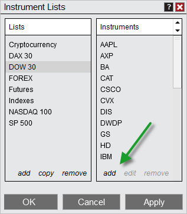
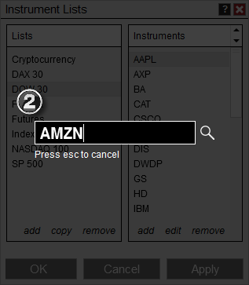

|
<< Click to Display Table of Contents >> Working with Instrument Lists |


|
Working with Instrument Lists
|
<< Click to Display Table of Contents >> Working with Instrument Lists |
|
NinjaTrader comes predefined with a few instrument lists that are kept up to date on our server. You also can create and manage your own instrument lists via this dialog.
 Understanding the Instrument Lists window
Understanding the Instrument Lists window

1. Instrument Lists The Lists section displays a list of Instrument Lists that can be configured. Please see "Adding or Removing Instrument Lists" section below for information on how to add and remove instrument lists. 2. InstrumentsThe Instruments section displays the selected lists instruments. Please see "Adding or Removing instruments to a list" section below for information on how to add and remove instruments to an instrument list. |
 Adding or Removing Instrument Lists
Adding or Removing Instrument Lists
Adding an Instrument ListTo create a new instrument list:
1.Select "add" in the Lists section of the Instrument Lists window 2.Type in the name of the instrument list you wish to add
 Removing an Instrument ListTo remove an instrument list: 1. Select the list you wish to remove in the Lists section of the Instrument Lists window. 2. Select remove
|
 Adding or Removing instruments to a list
Adding or Removing instruments to a list
The collection of instruments that are associated to the selected instrument list are displayed in the "Instruments" section.
Adding an InstrumentTo add an instrument to an instrument list

1.Start typing on the keyboard or select "add" for the overlay instrument selector to be triggered.

2.Type in the instrument that you want to add or select the magnifying glass to search for an instrument.
The instrument is added to the instrument list and will now be available throughout the NinjaTrader application.
Removing an InstrumentTo remove an instrument from an instrument list:
1.Left mouse click on the instrument you wish to remove from the instrument list in the right pane of the Instrument Lists window. 2.Press remove |